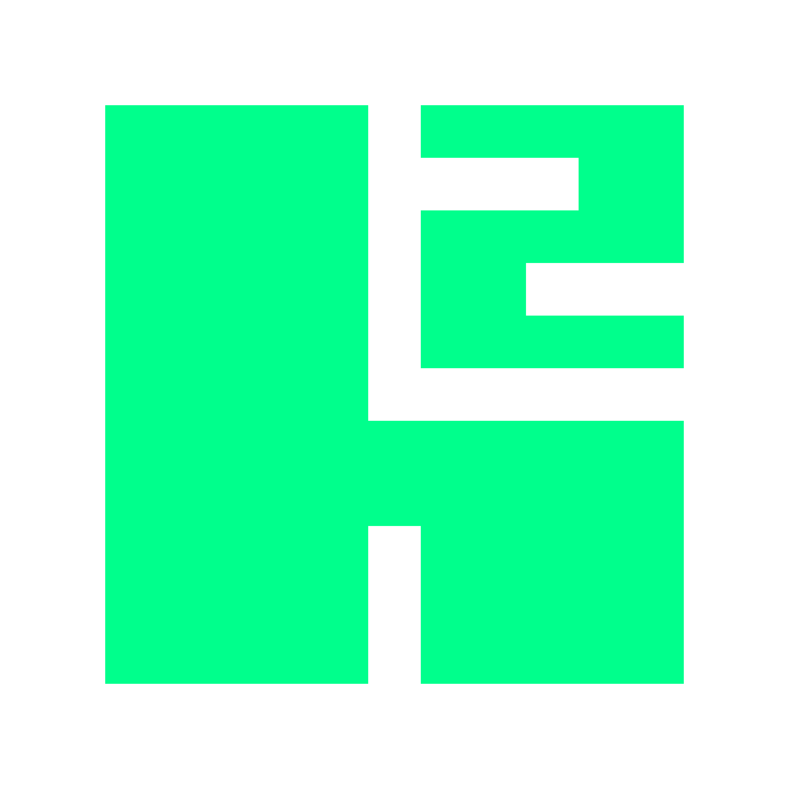
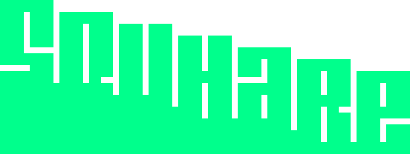

GAME ON.SCORE DONE.
Logo Squhare (h²) merepresentasikan nama kedua pendirinya, yaitu Hylmi dan Hakim.

SIAPA KAMI?
Kami adalah tim pengembang digital scoring yang berawal dari lingkungan sekolah dan berkembang melalui berbagai proyek pertandingan olahraga nyata. Berawal dari sebuah proyek sederhana, kami terus mengembangkan sistem scoring yang lebih modern, realtime, dan mudah digunakan untuk berbagai kebutuhan kompetisi olahraga.
APA YANG BISA KAMI BANTU?
Kami menyediakan layanan digital scoring untuk berbagai pertandingan olahraga.
berbagai pertandingan olahraga.
Kami juga melayani pembuatan Digital Scoring Custom sesuai keinginan Anda.
PERJALANAN DI BALIK
SEMUA BERAWAL DARI SATU PERTANYAAN
Siapa yang bisa ngoding?— Bayu Setiadi (Guru olahraga kami)
Kami saling menatap, lalu perlahan mengangkat tangan.
Dari
pertanyaan sederhana itu, semuanya dimulai.
SCOREPAPAN, PROYEK PERTAMA KAMI
Kami ditantang untuk membuat digital scoring untuk pertandingan bulu tangkis.
Bermodalkan JavaScript sederhana dan rasa penasaran yang besar, kami mulai membangun prototipe pertama kami.
Belum sempurna,
tapi dari situlah semuanya berkembang.
KAMI MULAI BELAJAR LEBIH JAUH
Seiring berjalannya waktu, kami mulai mempelajari banyak hal baru untuk mengembangkan sistem kami menjadi lebih baik.
Kami mulai membagi peran, saling membantu, dan membangun sistem kami bersama-sama sebagai sebuah tim.
Ilmu yang kami pelajari perlahan kami terapkan ke proyek digital scoring kami. Bersamaan pembaruan tersebut, kami mengganti nama PapanScore menjadi NeoScore.
PERTAMA KALI DIGUNAKAN DI LAPANGAN
Setelah berkali-kali trial saat pelajaran olahraga, akhirnya sistem kami digunakan secara resmi.
NeoScore tampil perdana pada classmeet antar jurusan cabang olahraga bulu tangkis di sekolah kami.
Untuk pertama kalinya, karya kami benar-benar digunakan dalam pertandingan nyata.
KETIKA KAMI DIPERCAYA LAGI
Setelah NeoScore, Pak Bayu kembali datang membawa tantangan baru.
Kali ini kami diminta membuat digital scoring untuk permainan tradisional hadang.
Proyek baru itu kami beri nama Blokd.
Sistemnya lebih kompleks dan lebih menantang.
PERTAMA KALI DI LUAR SEKOLAH
Setelah berbagai trial saat ekstrakurikuler olahraga tradisional, kami merasa sistem ini siap digunakan lebih jauh.
Blokd akhirnya digunakan pada Pekan Olahraga Tradisional Jakarta 2025.
Sistem yang kami bangun benar-benar membantu jalannya pertandingan.
TIDAK SEMUANYA BERJALAN MULUS
Itu kok display-nya delay banget sih?!
Kami sadar membuat sistem realtime yang andal bukanlah hal yang mudah.
Tapi justru dari komplain seperti inilah kami banyak belajar.
Setiap kendala menjadi bahan evaluasi untuk membuat sistem kami lebih baik lagi.
KAMI TERUS MEMPERBAIKI
Kali ini aman kok pak, sudah tidak delay.
Semua masukan yang kami terima, kami catat dan kami perbaiki satu per satu.
Mulai dari performa realtime, stabilitas server, hingga pengalaman pengguna saat pertandingan berlangsung.
Dan kami membuktikannya kembali pada Pekan Olahraga Tradisional Jakarta Utara 2026.
PERJALANAN KAMI MASIH PANJANG
Dari sebuah pertanyaan sederhana di lapangan olahraga, kami belajar bahwa teknologi benar-benar bisa membantu jalannya pertandingan.
Kami akan terus mengembangkan digital scoring yang lebih modern, lebih stabil, dan lebih mudah digunakan untuk berbagai cabang olahraga.
Karena bagi kami, setiap pertandingan layak mendapatkan sistem yang terbaik.